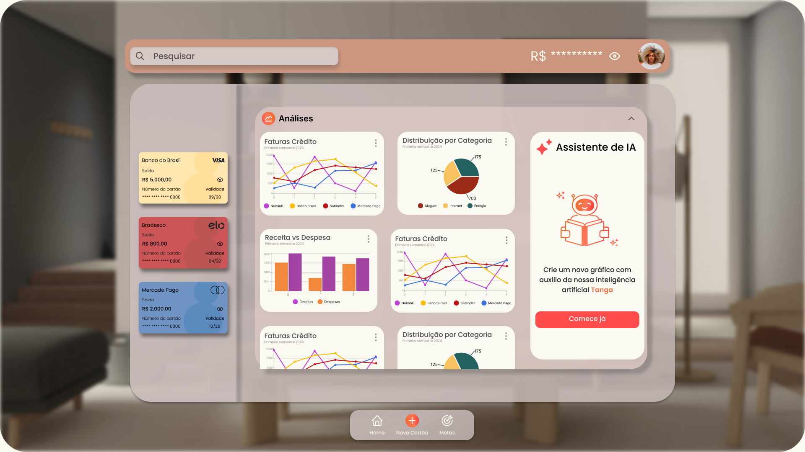
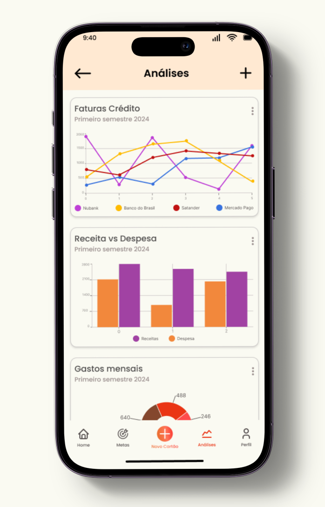
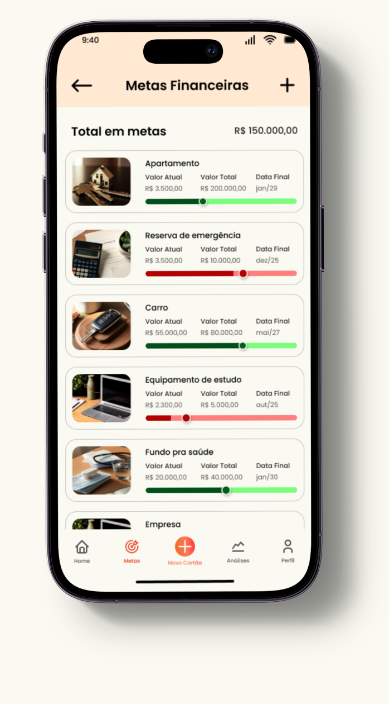
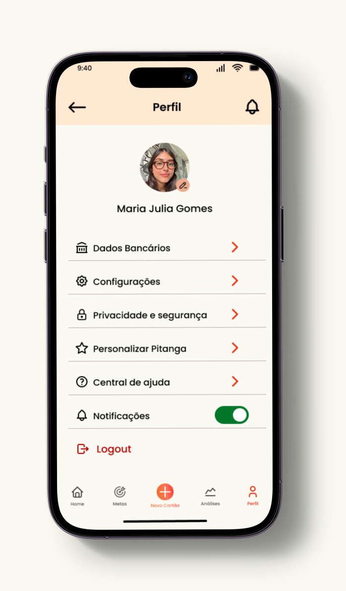
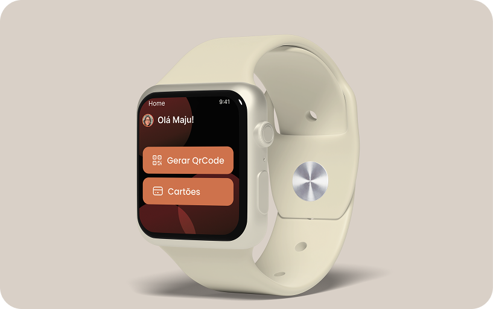

Pitanga.
Um app de finanças que reúne cartões, contas e metas num só lugar, do smartphone ao smartwatch e ao Apple Vision Pro. A finance app that brings cards, accounts and goals together in one place, from smartphone to smartwatch and Apple Vision Pro.

- Meu papelMy role
- UX/UI Designer
- PeríodoTimeline
- 2025 · concluído2025 · completed
- PlataformaPlatform
- Mobile · Watch · Vision Pro
- FerramentasTools
- Figma
Finanças espalhadas em muitos lugares, nenhum deles no pulso.Finances scattered across many places, none of them on the wrist.
Gerir as finanças pessoais com eficiência ainda é um desafio para muita gente, principalmente quando é preciso reunir informações de vários bancos e cartões num lugar só. E a falta de soluções acessíveis para dispositivos vestíveis torna difícil acompanhar os gastos do dia a dia com rapidez e conveniência. Managing personal finances efficiently is still a challenge for many people, especially when information from several banks and cards needs to live in one place. And the lack of accessible solutions for wearable devices makes it hard to track daily spending quickly and conveniently.
O objetivo: uma experiência simples e segura para acompanhar gastos, definir metas financeiras e pagar por QR Code, com o mesmo cuidado no telefone, no relógio e nos óculos de realidade aumentada. The goal: a simple, secure experience to track spending, set financial goals and pay via QR Code, with the same care on the phone, the watch and augmented reality glasses.
UX/UI de ponta a ponta, em três dispositivos.End-to-end UX/UI, across three devices.
Projeto desenvolvido como trabalho de graduação: cuidei de tudo, da pesquisa e análise de concorrentes aos fluxos, wireframes e telas em alta fidelidade. Desenhei a gestão de contas e cartões, as análises de gastos, as metas e o pagamento por QR Code no smartwatch. Developed as my graduation project: I owned everything, from research and competitor analysis to flows, wireframes and high-fidelity screens. I designed account and card management, spending analytics, goals and QR Code payments on the smartwatch.
A parte mais desafiadora foi levar a experiência para o Apple Vision Pro: um painel espacial de análises com a Tanga, assistente de IA que cria novos gráficos a pedido. The most challenging part was bringing the experience to the Apple Vision Pro: a spatial analytics dashboard with Tanga, an AI assistant that creates new charts on request.
Da pesquisa ao protótipo em três telas.From research to a three-screen prototype.
DescobertaDiscovery
Pesquisa sobre gestão financeira pessoal e análise de concorrentes: o que os apps de banco resolvem bem e onde os wearables ficam de fora.Research on personal finance management and competitor analysis: what banking apps solve well and where wearables are left out.
Arquitetura & fluxosArchitecture & flows
Mapear contas, cartões, metas, análises e o fluxo de pagamento por QR Code, decidindo o que faz sentido em cada dispositivo.Mapping accounts, cards, goals, analytics and the QR Code payment flow, deciding what belongs on each device.
Wireframes
Estruturar as telas em baixa fidelidade, priorizando leitura rápida de saldos e gráficos antes de decidir o visual.Structuring the screens in low fidelity, prioritizing quick reading of balances and charts before deciding the visuals.
UI & protótiposUI & prototypes
Telas em alta fidelidade e protótipos navegáveis para mobile, smartwatch e Vision Pro, com componentes consistentes entre os três.High-fidelity screens and navigable prototypes for mobile, smartwatch and Vision Pro, with components consistent across all three.
As telas principais.The key screens.




Um sistema que veste três dispositivos.One system that fits three devices.
Para manter a experiência coerente entre telefone, relógio e Vision Pro, organizei cores, tipografia e componentes num sistema único: o mesmo botão, cartão e gráfico se adaptam a cada tamanho de tela.To keep the experience coherent across phone, watch and Vision Pro, I organized colors, typography and components into a single system: the same button, card and chart adapt to each screen size.
CoresColor
TipografiaTypography
ComponentesComponents
Uma experiência contínua, do bolso ao pulso.A continuous experience, from pocket to wrist.
O resultado foi uma experiência que acompanha a pessoa em cada contexto: o telefone concentra a gestão completa de contas, cartões e metas; o relógio resolve o pagamento por QR Code no pulso; e o Vision Pro transforma as análises num painel espacial, com a assistente Tanga criando novos gráficos a pedido. The result was an experience that follows the user in every context: the phone holds the full management of accounts, cards and goals; the watch handles QR Code payments on the wrist; and the Vision Pro turns analytics into a spatial dashboard, with the Tanga assistant creating new charts on request.